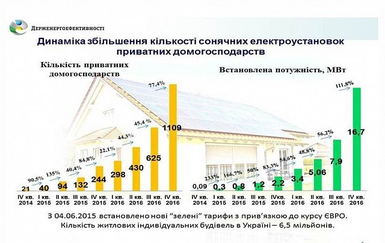

Ярослав Чемеринський
Директор
Моб. тел.: +38 067 674 24 99
Роб. тел.: + 38 032 295 84 62
Email: yarislav.chemerynskiyi@denobs.com.ua
79014 м. Львів
вул. Мучна 23, офіс 4
Email: office@denova.сom.ua
Website: denovs.com.ua
2016 рік став проривним з точки зору переходу українців на чисті джерела енергії. Так, за рік кількість домогосподарств, що встановили сонячні панелі, збільшилася майже у 4 рази порівняно з 2015 роком, а саме - з 244 до 1109 домогосподарств. «Важливим є той факт, що обсяг потужності сонячних панелей зріс майже у 7 разів: з 2,2 МВт станом на кінець 2015 року до 16,7 МВт наприкінці 2016 року. Тобто, домогосподарства почали встановлювати більш потужні панелі, ніж раніше», - прокоментував статистичні дані Голова Держенергоефективності Сергій Савчук. Таким вражаючим результатам сприяла й державна політика у сфері відновлюваної енергетики. Зокрема, стимулом став введений у 2015 році Законом України №514-VIII «зелений» тариф на закупівлю електроенергії, виробленої сонячними електроустановками приватних домогосподарств потужністю до 30 кВт, який прив’язано до курсу євро.
«Завдяки дії цього Закону домогосподарствам стало вигідно встановлювати сонячні панелі та дбати про свою енергонезалежність, - наголосив Сергій Савчук. - Для усіх, хто встановив у 2016 році сонячні електроустановки потужністю до 30 кВт, діє досить високий «зелений» тариф у розмірі 19 євроцентів за 1 кВт*год. Саме за цим тарифом ті домогосподарства, які споживають електроенергії менше, ніж виробляють, можуть продавати її надлишок у мережу, тобто заробляти». Показовою є динаміка збільшення кількості приватних домогосподарства, що перейшли на сонячну електроенергію. Так, у 1-му кварталі 2016 році їхня кількість зросла на 22,1 % порівняно з попереднім періодом, у 2-му кварталі – на 44,3%, у 3-му кварталі – ще на 45,4%, і, що цікаво, у 4-му кварталі - на 77,4 %. Серед пріоритетних напрямків діяльності компанії Денова - енергоаудит та біоенергетика, впровадження енергозберігаючих технологій та альтернативних джерел енергії. Звертайтесь до нас і ми допоможемо вам заощаджувати. Ми не просто крокуємо в ногу з часом, ми його випереджаємо!